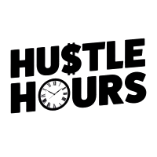

Χτίσαμε τη τράπεζα από το μηδέν... / Ioannis Tsavdaridis
Texnologia
Χρειάζεσαι website ή εφαρμογή για την επιχείρησή σου, για τον εαυτό σου; Επικοινώνησε μαζί μου για να το φτιάξουμε μαζί με την ομάδα μου.
Κλείσε συνάντησηPodcast, videos, templates, startup lessons για developers που θέλουν να χτίσουν, να μάθουν system design και να προχωρήσουν στην καριέρα τους.
Trusted by





Podcast
Γεφυρώνοντας το χάσμα ανάμεσα στην έρευνα και στην επιχειρηματικότητα.
Templates
Configs και checklists που χρησιμοποιώ ο ίδιος σε production.
Τι πραγματικά σου έμαθε το πτυχίο Πληροφορικής και πώς να το μετατρέψεις σε καριέρα το 2026, η αγορά, οι ρόλοι πέρα από καθαρό κώδικα, το AI ως εργαλείο, και ένα σχέδιο 90 ημερών.
Ολοκληρωμένος οδηγός για την ανάπτυξη backend εφαρμογών με τις καλύτερες πρακτικές + project βήμα-βήμα
Ό,τι ελέγχω πριν βγάλω κάτι live: monitoring, rollback plan, security, performance. Markdown, έτοιμο για το repo σου.
Testimonials
"Το system design επεισόδιο μου "ξεκαθάρισε" κάτι που είχα μπλοκάρει μήνες."
"Οι γνώσεις που δίνει χρησιμοποιούνται στην αγορά εργασίας και στις επιχειρήσεις."
"Ο Γιάννης πρόσεξε τις λεπτομέρειες στο website που έφτιαξε για την επιχειρησή μου και για το συνεργάτη μου"
Videos
Πρακτικά videos για startups, workflows και βαθιά technical dives.